{kind=link}
{kind=link}
{kind=link}
{kind=link}
{kind=link}
{kind=link}
{kind=link}
{kind=link}
Imersão
Agosto 2026 · Rio de Janeiro
Imersão em Harmonização Orofacial
Três dias hands-on com anatomia real, do planejamento facial à execução segura.
Saber mais
Mentoria e formação para profissionais que querem unir técnica refinada, ética e naturalidade.
A formação vai além da técnica: forma profissionais conscientes, responsáveis e comprometidos com a excelência. Quando se ensina com propósito, cria-se uma rede de excelência que transforma a especialidade.
Metodologia hands-on, com anatomia real, abordagem científica e mentoria próxima.
Prática hands-on fundamentada em anatomia verdadeira — a base de qualquer procedimento seguro.
Formação de profissionais que carregam responsabilidade e respeito à individualidade de cada paciente.
Acompanhamento próximo e transformador, construindo uma rede de profissionais éticos.
“Aprendi a respeitar o rosto do paciente antes de qualquer técnica. Mudou a forma como eu atendo.”
“A profundidade anatômica e a mão na massa me deram segurança que nenhum curso teórico deu.”
Turmas em formação ao longo do ano. Conheça os próximos encontros — e fale com a equipe sobre datas, formato e investimento.
Três dias hands-on com anatomia real, do planejamento facial à execução segura.
Saber maisAcompanhamento próximo para aprofundar a leitura anatômica e a decisão clínica.
Saber maisFormação avançada para refinar resultados sem perder a identidade do rosto.
Saber mais